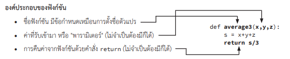

การใช้งานฟังก์ชัน
• อาจเรียกว่า subprogram หรือ subroutine
• เป็นการแยกส่วนคำสั่งที่ซ้ำๆ กัน หรือเข้าใจยาก ออกมาจากโปรแกรมหลัก
• ทำให้โปรแกรมอ่านง่าย เข้าใจง่าย
• ทำให้โปรแกรมหลักเรียกใช้ฟังก์ชันได้ โดยไม่ต้องเขียนคำสั่งหลายรอบ
• ฟังก์ชันควรมีหน้าที่การทำงานชัดเจน เช่น ฟังก์ชันหาค่าเฉลี่ยของจำนวนในลิสต์ ฟังก์ชันกลับสตริง เป็นต้น
• ต้องเขียนฟังก์ชันไว้ก่อนส่วนที่จะเรียกใช้
องค์ประกอบของฟังก์ชัน
การคืนการทำงานจากฟังก์ชันและการคืนค่าจากฟังก์ชัน
• สามารถใช้คำสั่ง return ได้หลายที่ในฟังก์ชัน
• เมื่อทำคำสั่ง return แล้ว จะหยุดการทำงานของฟังก์ชันทันที และกลับไปทำงานต่อหลังจุดที่เรียกใช้ฟังก์ชัน
• ฟังก์ชันคืนค่าได้ 1 ค่าเท่านั้น ถ้าต้องการคืนหลายค่า ให้ใช้ tuple เช่น return (answer1, answer2)
• หากคำสั่งสุดท้ายของฟังก์ชันไม่ใช่ return ระบบจะเพิ่มคำสั่ง return (ไม่คืนค่าใด ๆ) ที่ท้ายฟังก์ชัน
• คำสั่ง return ที่ไม่ได้กำหนดให้คืนค่าใด ๆ ระบบจะคืนค่า None (None เป็นค่าพิเศษในระบบ ไม่ใช่สตริง 'None')
ตัวแปรในฟังก์ชัน (local variables)
• ตั้งชื่อซ้ำกับตัวแปรในฟังก์ชันอื่นได้ ถือว่าเป็นคนละตัวแปรกัน
• เรียกใช้ตัวแปรในฟังก์ชันอื่นไม่ได้
• หากส่งตัวแปรประเภท int, float, string, boolean เข้ามาในฟังก์ชัน จะถือว่าเป็นคนละตัวกัน
• หากส่งตัวแปรประเภท list, dict, set เข้ามาในฟังก์ชัน
ถ้ามีการแก้ค่าในฟังก์ชัน ตัวแปรเดิมของผู้เรียกฟังก์ชันจะเปลี่ยนค่าด้วย